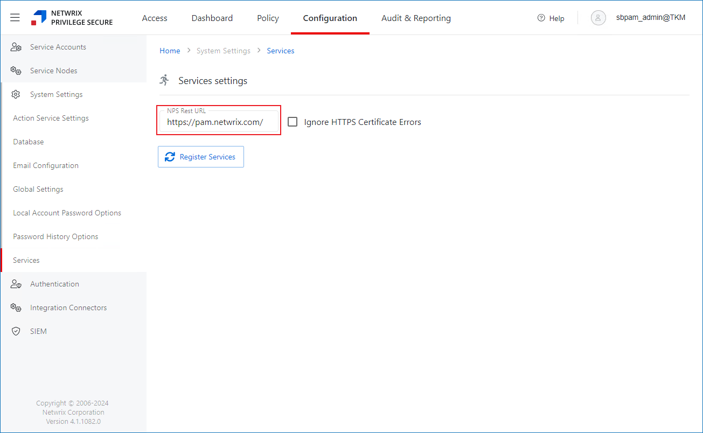

Symptom
Netwrix Privilege Secure generates the following error on each launch of the High Availability (HA) Configuration tool (NPS.HAMgr):
Index was outside the bounds of the array.
Cause
The HA Configuration tool expects a port value at the end of the NPS Rest URL. In case you configured your NPS Rest URL to have no port, the HA Configuration tool prompts an error because it expects a port.
NOTE: To verify how your NPS Rest URL is set up, refer to the following steps:
On the main Privilege Secure screen, click the Configuration tab.
In the left pane, select Services. The page will include the NPS Rest URL field. To learn more about the Services page in Netwrix Privilege Secure, refer to the following article: System Settings Pages − Services Page · v4.0 .

Resolution
Specify the 443 port in the NPS Rest URL. Refer to the following codeblock for the Rest URL syntax and example:
FQDN:port https://pam.netwrix.com:443